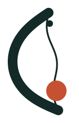
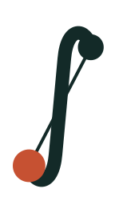

BATRUC / PROPOSTA DE LOGO 02 — PARA APROVAÇÃO (O ORIGINAL NÃO FOI ALTERADO)
CABEÇALHO SIMULADO — A · BERIMBAU DE ELÁSTICA
RASGO / INSTRUMENTO EM INCUBAÇÃO
MATEMÁTICAFÍSICAMÚSICA01
AS TRÊS OPÇÕES
A · BERIMBAU DE ELÁSTICA — o arco é a elástica de Euler, a forma exata de uma vara elástica curvada pela corda
(θ″ + λ·sen θ = 0, calculada); o arame é a corda; a cabaça vermelha é o ressonador; o dobrão encosta a 1/9 do arame —
encurtar a corda em 1/9 sobe a nota um tom (9:8): as duas notas do berimbau.B · O MESMO, COM A ONDA — o arame desenhado vibrando no 3º modo (onda estacionária, três ventres).C · BERIMBAU-INTEGRAL — o arco é o sinal ∫ (a integral: soma contínua — o som é a soma das vibrações da
corda); o terminal de cima prende a corda, o de baixo é a cabaça vermelha.
SÓ O DESENHO


COMPARAR
O lettering é o do original, refeito em vetor. O original segue intacto em
assets/brand/references/batruc-logo-selected-01.png; a proposta 01 (polígonos das claves) segue em
logo-proposta.html.